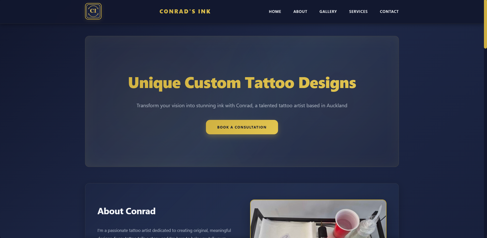

About Me
Still learning, still building
Hi, I am Willem. I learn best by building real projects, spotting what feels off, and coming back with a better version.
Featured Build
A branding-focused build where I am practicing visual identity, page flow, and a stronger client-ready presentation.

Open Tattoo WebsiteWillem Samplonius • Junior Web Developer
I am early in my developer journey and learning in public. Every project helps me improve my layout decisions, styling, and front-end code quality.
Right now I am focused on the fundamentals: solid HTML structure, clean CSS layout, and improving each project every time I revisit it.

Me and Blu. It felt right to use something real instead of a generic profile image.
About Me
Hi, I am Willem. I learn best by building real projects, spotting what feels off, and coming back with a better version.
Contact
If you want to connect, follow my progress, or share feedback, email is the best place to start.
willemsamplonius@outlook.comSelected Work
These are not final portfolio pieces. They are active projects I use to improve one skill at a time.
Portfolio
This site is both my portfolio and my practice space. I use it to test stronger layouts, cleaner styling, and clearer writing as I improve.
Read more about this projectClient Style Build
A branding-focused site in active development, built to practice atmosphere, page flow, and a stronger visual identity for a real-world business style.
Open the tattoo websiteJavaScript Practice
A calculator built with HTML, CSS, and JavaScript to give me practical experience with logic, interaction, and shipping small features that work.
Launch the calculatorSecurity Utility
A browser-based password generator with configurable options, batch generation, and built-in strength checks using secure randomness.
Open password generator